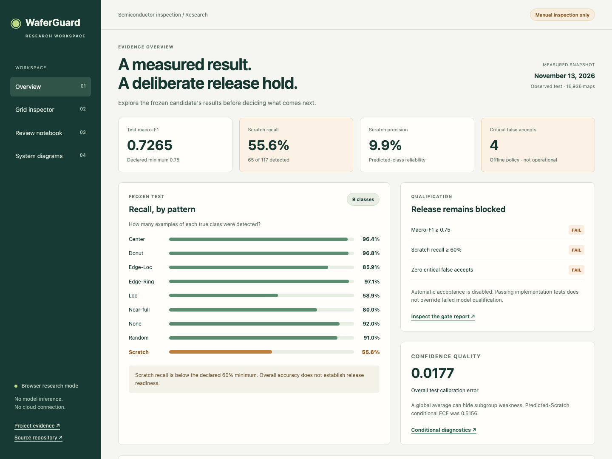
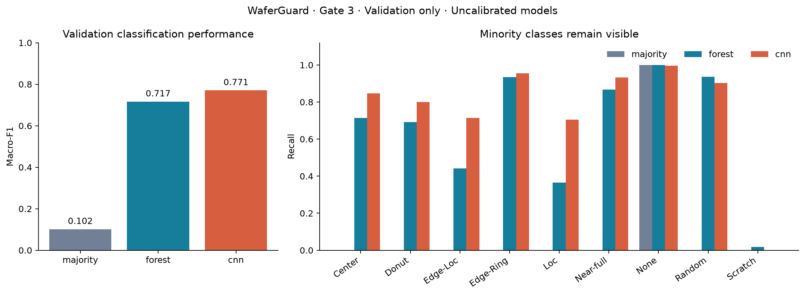
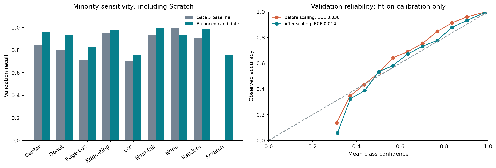

Applied ML · Data integrity · Release engineering
Evidence before automation.
WaferGuard explores when a wafer-pattern classifier can support inspection review. The work starts with the cost of a wrong decision, follows the data, and keeps the release decision separate from the model score.
Built locally · Captured in Chrome
A research workspace you can inspect.
Browse measured results, validate categorical JSON grids, and save browser-only observations. These are screenshots of the running app. The inspector and notebook use visibly labeled synthetic examples, not real dataset maps or model predictions.



The business question
Which cases deserve a second look?
A missed defect and an unnecessary human review have different consequences. This pilot makes the model's errors and routing tradeoffs visible before proposing automation. No factory yield, cost savings, or production throughput was measured.
The strongest outcome is a defensible decision: the evidence does not support releasing the current candidate. Passing implementation tests does not change that conclusion.
From source data to release controls
Data contracts and provenance. Leakage-aware partitions. Simple baselines and controlled experiments. Calibration and conditional diagnostics. A frozen routing policy and a machine-readable failed qualification.
Four steps, one evidence trail
The engineering behind the decision.
811,457 real maps; 172,950 labeled. Record contradictions, copies, and provenance.
Data card ↗169,659 consistent representatives. Group lots and original/encoded identities before splitting.
Benchmark ↗Compare baselines, investigate rare-class failures, calibrate separately, then freeze and test.
Measured results ↗Preserve the test failure. Block promotion and keep acceptance disabled.
Release record ↗Inspect the failure
A useful average can hide a weak class.
The historical Gate 3 CNN scored validation macro-F1 0.7707 but missed all 117 validation Scratch cases. Gate 4 selected a different candidate. It improved validation recall, then failed frozen test qualification. These are distinct experiments and partitions.

Inspect the later candidate's measured calibration and recall

Simple diagrams
The local app, without the cloud plumbing.
Read-only research reports and in-memory grid input feed a browser workspace. Manual observations are saved in a local notebook. No inference server or cloud credentials are required.


A walkthrough with context
Watch the story, then inspect the evidence.
90-second recording link pending
No video file or Vercel app URL has been supplied. The campaign studio includes a complete 90-second production script and an integration point for the recording. It does not substitute a script for an actual video.
For hiring conversations
Twelve days of engineering decisions.
The campaign moves from business risk to data integrity, model selection, uncertainty, release controls, and cloud design. Every daily post includes technical evidence, an engineering decision, an architectural decision, and repository sources.
The next decision is explicit.
Review Gate 4 before further modeling or a manual-review-only research workflow. The test is now observed; do not use it for tuning. Finish review correctness and authorization before claiming a live service, then review deployment, measured costs, and teardown separately.
Current model card ↗ · Threat model ↗ · Deployment and cleanup guide ↗